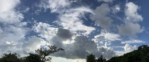
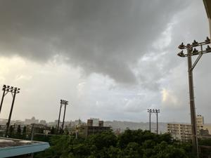
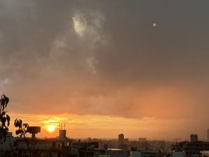

うるがいの話 ある日
最新: 旧盆のなかび【うるがいの話 ある日】とは 一日だけのプログです
『うるがいの話』の最新一日だけのプログで、通信料が少なく経済的だ。カニの画像をクリックすると全ての日付が載る『うるがいの話』サイトを表示します
|
|
【うるがいの話】 うるがい(ｳﾙｶﾞｲ urugai)とは、『もずくがに』の名前でとても大きくなります。 |
|---|---|
|
|
【カミマヤーの話】 猫のことを方言でマヤーといいます。カミマヤー（kamimayaa）とは、神の猫のことです。 |
|
【たながぁの音楽】 たながぁ（ﾀﾅｶﾞｰ tanagaa）とは手長えびのことで、何種類かあり大きいのは車 エビぐらいになります。 |

|
【ぶながぁの話】 ぶながぁ(ﾌﾞﾅｶﾞｰ bunagaa)とは、赤い髪の毛、赤い身体、そして身長は１ｍ２０ｃｍ ぐらい、川の蟹を食べているの目撃された。場所は沖縄県国頭郡大宜味村のと ある村僕の隣近所に住んでいる爺さんから、聞いた話です。 |
|
|
【ギーマの話】 ギーマ(giima)とは、山原の里山に咲くスズランに似た、 花を付けます。実は食べられます、 気が付くと口の周りが紫になっています。 |
2024年08月17日 (土）旧盆のなかび
16:12

私の食事が、２食から３食へ変更する。仏壇の供え物を食べるから、おかげ
でリズムがくるっている。マンションは、ヨメが昼まえに一回だけ供え物を
するのだが、１２時前にマンションへ行く、ところがお中元の未宅配のお知
らせがあり宅配に電話すると直ぐに来るというのでマンションに待つことな
った。家に戻った私、１２時を２０分ほど過ぎる、ん、私の所の仏壇は？さ
すがにとマンションに待機するヨメに連絡、指示を受けて私が、仏壇に供え
物をうさぎる。とうとう、こうなったか！。
ジョギング中に雨が、ポツリポツリと落ちて来た。近くの公民館でエイサー
の準備で人だかりができていた。家にももどりしばらくするとかなり激しい
にわか雨が、エイサーの太鼓の音が突然なりやんだ。

日没の太陽、にわか雨がまだ降っている。エイサーの音は聞こえず。

１６時０５分 ビットコインの総資産 ￥２５、３１１（↑９２）